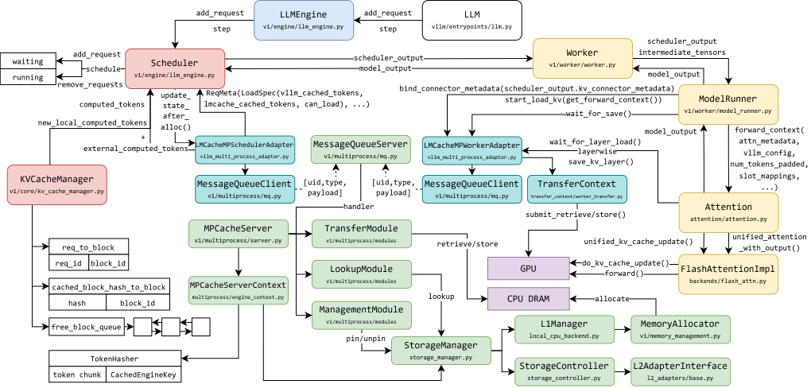
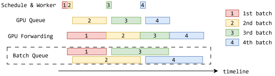

LLM serving simulation for hierarchical KV-cache systems
Background
vLLM is a high-throughput LLM serving engine that uses continuous batching and PagedAttention to efficiently manage inference workloads. Its scheduler dynamically batches requests at the token level, while PagedAttention manages the KV cache in non-contiguous memory blocks to reduce fragmentation and improve memory utilization. Together, these mechanisms enable efficient GPU utilization under dynamic serving workloads.
However, GPU memory remains a major constraint on LLM serving, especially for long-context and memory-intensive workloads. LMCache addresses this limitation by extending KV-cache management beyond GPU memory to a hierarchy of storage tiers, including CPU memory and remote storage. By offloading and reusing previously computed KV caches, LMCache can reduce redundant prefill computation and improve serving efficiency.
Integrating hierarchical KV-cache storage into LLM serving introduces additional complexity. Cache transfers must be coordinated with request scheduling and GPU execution, and their performance impact depends not only on transfer latency but also on whether data movement can overlap with computation.

Simulating LLM serving systems
vLLM-Sim is a simulation framework that preserves the software behavior of vLLM while replacing hardware execution with simulated backends. It retains the original scheduling and memory-management logic, allowing researchers to explore different hardware configurations and workload characteristics without repeatedly running expensive experiments on physical GPUs.
I am working with Shiyi Liu, a Ph.D. student in Prof. Yuan Xie’s group, to extend vLLM-Sim with support for LMCache and hierarchical KV-cache storage.
To better understand the architecture of vLLM-Sim, I first developed a lightweight vLLM platform plugin for trace recording and replay. This helped me study the interactions among request scheduling, memory management, model execution, and the simulated hardware backend.
A key aspect of the simulator is preserving asynchronous execution. In real vLLM serving, the CPU scheduler can prepare subsequent batches while the GPU is executing the current batch. Accurately representing this overlap is essential for meaningful performance evaluation.

Hierarchical KV-cache simulation
My main contribution has been integrating LMCache into the simulated execution environment. Rather than performing actual KV-cache allocations and data transfers, the integration redirects memory operations to simulated storage and models transfer latency using profiled memory bandwidth.
An important challenge is preserving the dependencies between cache transfers and model execution. In the real system, GPU computation may need to wait for specific KV-cache transfers to complete, while other operations can proceed concurrently. The simulator must reproduce these relationships on its virtual timeline without performing the underlying data movement.
To support this behavior, I modified the LMCache integration, simulated backend worker, and profiling path to coordinate asynchronous transfers with model execution. These changes allow the simulator to represent overlapping scheduling, data movement, and computation, including pipelined execution and workloads mixing prefill and decode.
More broadly, this work explores a central challenge in systems simulation: which aspects of real execution must be modeled faithfully, and which can be abstracted away without compromising the usefulness of performance predictions?
Evaluation and ongoing work
The LMCache integration is functional, and I am currently evaluating its fidelity against real-system measurements. The evaluation focuses on key serving metrics, including time to first token (TTFT), time per output token (TPOT), and end-to-end latency, across different workload characteristics and memory configurations.
The goal is to understand how accurately the simulator captures the performance effects of hierarchical KV-cache storage, particularly those arising from asynchronous data movement, execution dependencies, and overlap between communication and computation.
Validation is ongoing, and quantitative fidelity results are not yet available.